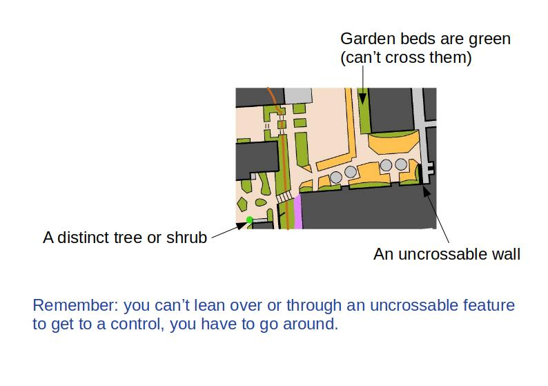

<!DOCTYPE html>
<html><head>
<meta http-equiv="content-type" content="text/html; charset=UTF-8">
    <title>Orienteering</title>
    <script src="./js/jquery.min.js"></script>
    <script src="./js/jspsych.js"></script>
    <script src="./js/plugins/jspsych-html-keyboard-response.js"></script>
    <script src="./js/plugins/jspsych-external-html.js"></script>
    <script src="./js/plugins/jspsych-instructions.js"></script>
    <link href="./js/css/jspsych.css" rel="stylesheet" type="text/css"></link>
  </head>
  <body></body>
  <script>
    
    
// #################  create timeline  #################
var timeline = [];  // The last thing we do is to run it!

// #################  create introduction screen  #################

    var introduction = {
      type:'external-html',
      url: "./doc/introduction_page.html",
      cont_btn: "next_b",
      };
    timeline.push(introduction);  // Into the timeline

// #################  create consent screen  #################

// Function that checks if a subject has given consent to participate.
// This stops execution of the rest of the timeline until the agreement checkbox is checked
var check_consent = function(elem) {
  if ($('#consent_checkbox').is(':checked')) {
    return true;
  }
  else {
    alert("If you wish to participate, you must check the box next to the statement 'I agree to participate in this study.'");
    return false;
  }
  return false;
};
 
// declare the block.
var consent = {
  type:'external-html',
  url: "./doc/consent_page.html",
  cont_btn: "start",
  check_fn: check_consent
};
timeline.push(consent);  // Into the timeline

// #################  create demographics screen  #################

var check_consent = function(elem) {
      // get the value of a radio button
        function getRadioButton(name) {
            var i, radios = document.getElementsByName(name);
            for (i = 0; i < radios.length; i = i + 1) {
                if (radios[i].checked) {
                    return (radios[i].value);
                }
            }
        }
        jsPsych.data.addProperties({
	    gender: getRadioButton("gender"),
        age: document.getElementById("age").value,
        language: document.getElementById("language").value,
        country: document.getElementById("country").value,
        experience: getRadioButton("experience").value,
        handedness: getRadioButton("handedness").value,
        mapholding: getRadioButton("mapholding").value,
        })

        // Effectively checks to ensure that we have valid inforamtion in all radio buttons
        // won't let you move forward unless all radio's have been answered

    return true
};

        
// generate a random subject ID with 15 characters
var subject_id = jsPsych.randomization.randomID(15);

// pick a random condition for the subject at the start of the experiment
var condition_assignment = jsPsych.randomization.sampleWithoutReplacement(['conditionA', 'conditionB', 'conditionC'], 1)[0];

// record the condition assignment in the jsPsych data
// this adds a property called 'subject' and a property called 'condition' to every trial
jsPsych.data.addProperties({
  subject: subject_id,
  condition: condition_assignment


    });

    var demographics = {
      type:'external-html',
      url: "./doc/demographics_page.html",
      cont_btn: "demographics_done",
      check_fn: check_consent
      };

    timeline.push(demographics);


// #################  create content screens  #################

    var instructions = 
    {
    type: 'instructions',
    pages: [
        '</img>',
        '</img>',
        '</img>',
        '</img>',
        '</img>'
    ],
    show_clickable_nav: true
    };
    timeline.push(instructions);

    // #################  create debrief screen  #################
    var debrief = 
    {
        type: 'html-keyboard-response',
        stimulus: 'All done.  Thank you for your participation.  <br>All data has been saved, you can now close this window</br>',
        choices: [' '],
        prompt: "<p>Pressing the space bar will blank the screen.</p>"
    };
    timeline.push(debrief);

     // #################  create timeline  #################
    jsPsych.init
    ({
        timeline: timeline  // Oooh yes, now we run the time line
    });


   </script>
</html>
